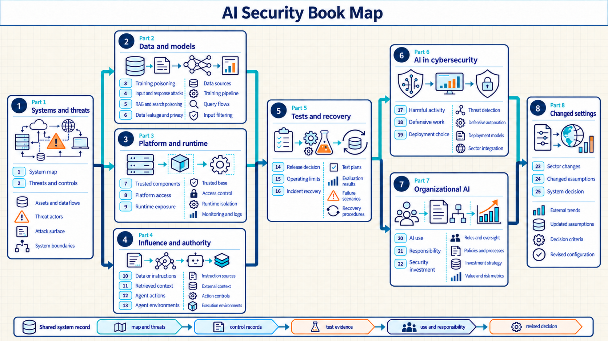
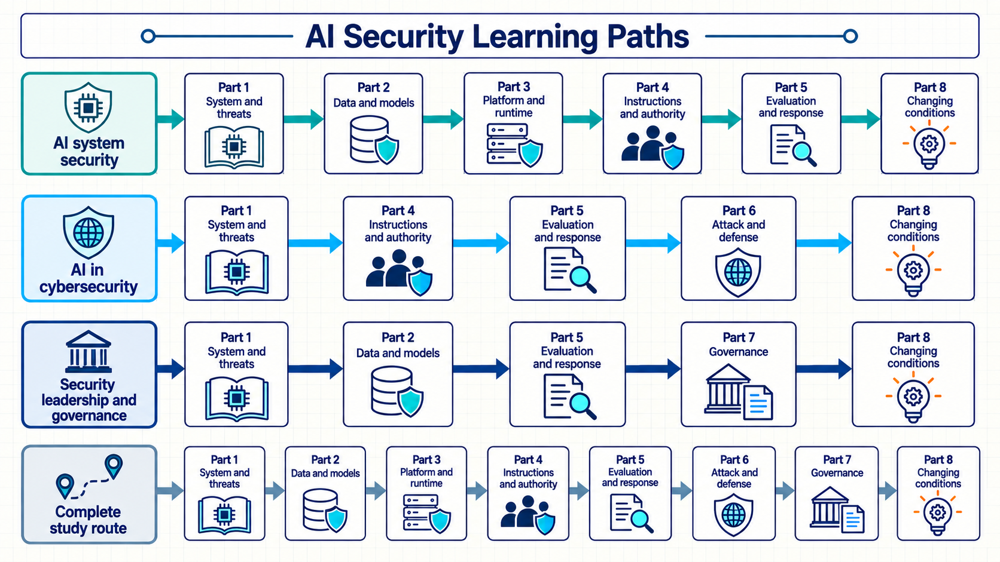

AI security map
The shared system settings, book structure, and reading paths that connect the security questions.
Abstract
AI security connects attacks on data and models to the software, people, and organizations that use them. This study guide examines those connections across internal and external models, document retrieval, and applications that can act on a user’s behalf. Its main sources combine public security guidance with research on specific attacks and defenses.
The sources used most often in this book come from the US National Institute of Standards and Technology (NIST). Its Adversarial Machine Learning taxonomy was written by Apostol Vassilev, Alina Oprea, and colleagues from government, university, and industry research. It organizes attacks by their goals, the attacker’s access, and the stage at which they affect a system.1 NIST’s AI Risk Management Framework and Generative AI Profile, developed with public and expert contributions, connect these technical questions to organizational responsibilities and evaluation.2
The UK National Cyber Security Centre (NCSC), the US Cybersecurity and Infrastructure Security Agency (CISA), and international partner agencies published the Guidelines for Secure AI System Development. Their guidance provides a recurring basis for the book’s treatment of design, deployment, operation, and recovery. The contributors include AI companies and academic research organizations.3
The OWASP GenAI Security Project contributes the application security perspective. Its community of security practitioners and researchers develops guidance on risks such as untrusted instructions entering model input, sensitive information exposure, and excessive application permissions. These sources help connect model behavior to failures in the surrounding application.4
Individual research papers supply more specific mechanisms and experimental evidence. Kai Greshake and coauthors demonstrated that instructions placed in retrieved content could alter model outputs and, in their tested systems, influence API calls.5 Jerome Saltzer and Michael Schroeder’s earlier work on computer protection supplies enduring design principles, including giving each user or program only the privileges it needs.6 Other papers develop the attacks, defenses, and evaluation methods examined in the technical chapters.
The supplied Nebius AI security presentation provided the initial topic outline. The chapter order, recurring examples, and diagrams form this guide’s own teaching structure. A framework recommendation and an experimental result answer different questions, so the explanations distinguish recommended practice from demonstrated behavior and retain the conditions that limit each conclusion.
System context
An employee sends a confidential incident report to an AI support assistant and requests a summary. The application retrieves an internal document and sends selected text to an external model. It returns the answer to the employee. A similar application can use a model operated inside the organization. It can also propose a ticket change or carry out an approved action.
The visible answer alone does not reveal the data path or the employee’s document rights. The model instructions and application authority also remain unknown. AI security analysis connects the system setting to attacker access, possible harm, controls, and evidence.
Highly technical readers who are relatively new to AI are the primary audience. The guide assumes familiarity with software systems, identity, networks, data handling, and ordinary security controls. It explains the AI concepts needed for each security question when they first matter.
Shared system settings
The guide reuses the settings below to keep the security questions concrete. Each setting specifies the organization, users, data, model operator, application capability, and attacker access before the control analysis.
- Employee support assistant. Employee identity, private documents, an application, and an internal or external model remain stable. Data paths, retrieval, model instructions, action authority, and incident state change.
- Controlled model laboratory. A fixed training or evaluation task provides controlled access to data, model parameters, model files, and compute. The attack mechanism, attacker access, defense, and test method change.
- Security analyst assistant. A read-only security task uses synthetic evidence, a human decision, and a fixed service need. Attacker or defender use, measurement method, model choice, and operating cost change.
- Organization portfolio. The same system map, threat record, control evidence, cost record, and responsibility record apply across multiple systems. Supplier relationships, sector duties, and technical assumptions change.
The deployment boundary and application capability are separate choices. A model may run inside the organization or on a managed platform. An external provider may operate it instead. The surrounding application may answer or retrieve documents. It may also propose an action or carry out an authorized action. These choices create different data paths and duties.
Book map
Part 1 supplies the common system and threat description. Parts 2 through 4 examine different protection surfaces. Part 5 tests the resulting claims and follows failures into operation and recovery. Parts 6 and 7 apply the same method to cybersecurity work and organizational decisions. Part 8 checks which conclusions remain valid in a changed setting. Together, the Parts extend one reviewable system record.

- Mapping systems and threats. What system is being protected, who operates it, and how could harm occur? The result is a system map and threat record.
- Protecting data and models. How can data or model behavior be changed, exposed, or copied? The result is a set of data use, training, query, and input attack records.
- Securing platform and runtime. Which components and service boundaries can be trusted? The result is a set of component, platform access, and runtime exposure records.
- Limiting influence and authority. How can untrusted text affect retrieval, decisions, tools, or execution? The result is a set of context, authorization, and execution records.
- Testing controls and recovery. What evidence supports release, operation, incident response, and return to service? The result is a set of test, monitoring, incident, and recovery records.
- Assessing AI in cybersecurity. How does AI change harmful and defensive work, and at what cost? The result is a set of capability, defensive value, and deployment records.
- Governing organizational AI. Which uses exist, who is responsible, and which investments reduce risk? The result is an inventory with responsibility and investment records.
- Adapting controls to change. Which claims remain valid when the sector or technical setting changes? The result is a record of changed assumptions and a complete system decision.
Book contents
The map shows the dependency between Parts. The contents below list every chapter under its Part.
- Part 1: Mapping systems and threats. Chapter 1: Mapping the AI system, and Chapter 2: Defining credible threats.
- Part 2: Protecting data and models. Chapter 3: Controlling data use, and Chapter 4: Protecting model training. Chapter 5: Limiting query disclosure, and Chapter 6: Resisting adversarial inputs.
- Part 3: Securing platform and runtime. Chapter 7: Selecting trusted components, and Chapter 8: Limiting platform access. Chapter 9: Containing runtime exposure.
- Part 4: Limiting influence and authority. Chapter 10: Separating data from instructions, and Chapter 11: Controlling retrieved context. Chapter 12: Authorizing agent actions, and Chapter 13: Confining agent environments.
- Part 5: Testing controls and recovery. Chapter 14: Deciding whether to release, and Chapter 15: Keeping operations within limits. Chapter 16: Recovering from AI incidents.
- Part 6: Assessing AI in cybersecurity. Chapter 17: AI’s role in harmful activity, and Chapter 18: AI in defensive work. Chapter 19: Choosing a viable deployment.
- Part 7: Governing organizational AI. Chapter 20: Managing organizational AI use, and Chapter 21: Assigning responsibility. Chapter 22: Choosing security investments.
- Part 8: Adapting controls to change. Chapter 23: Adapting controls by sector, and Chapter 24: Security under changed assumptions. Chapter 25: Reviewing a system decision.
- Appendix: Glossary. Definitions of terms used across the book.
Learning path
Part 1 is the common starting point because every later claim refers to its system boundary and threat record. Parts 2, 3, and 4 can then be studied as separate branches. Their controls meet in Part 5, where test and operational evidence determine whether the complete system remains within its stated limits.

The later branches depend on that foundation:
- AI system security: Parts 1 through 5, followed by Part 8.
- AI in cybersecurity: Parts 1, 4, 5, 6, and 8.
- Security leadership and governance: Parts 1, 2, 5, 7, and 8.
- Complete study route: Parts 1 through 8 in order.
Within each chapter, the opening setting fixes the relevant boundary. The sections then connect a failure mechanism to attacker access, a control, the evidence that can test it, and the limit that remains.
Scope boundaries
The guide concerns the security of AI systems and the security effects of using AI. It introduces model training, generation, retrieval, and agents only to explain the relevant attack and control mechanisms. Its scope excludes foundation model development and general cloud administration, as well as the full lifecycle for developing secure software.
Legal and regulatory duties differ by jurisdiction and sector. The chapters identify where those duties change a security decision without offering legal advice, and examples state their assumptions without claiming that one control fits every organization or deployment.
Evidence and references
Research findings, measured results, historical attributions, formal definitions, and standards based processes are cited beside the claims they support. Sources favor established standards bodies, security organizations, university material, reputable technical publications, and influential peer reviewed research.
Common industry practices may appear without a citation when the text identifies them as common practice rather than a measured fact. The text states open questions, disputed results, and limits of available evidence directly. Footnotes support the claim near them. They do not replace the explanation in the main text.
The glossary appendix collects the defined terms in one alphabetical reference.
Apostol Vassilev, Alina Oprea, Alie Fordyce, Hyrum Anderson, Xander Davies, and Maia Hamin, Adversarial Machine Learning: A Taxonomy and Terminology of Attacks and Mitigations, NIST AI 100-2e2025 (2025), title pages and abstract, publication. The author affiliations include NIST, Northeastern University, Cisco, and the UK AI Security Institute. Influence here means the source’s use across this guide’s recorded claims and chapters.↩︎
NIST, Artificial Intelligence Risk Management Framework (AI RMF 1.0) (2023), publication and development overview. NIST, Artificial Intelligence Risk Management Framework: Generative Artificial Intelligence Profile, NIST AI 600-1 (2024), acknowledgments and introduction, publication. The Profile credits the Generative AI Public Working Group, NIST staff, and guest researchers.↩︎
NCSC, CISA, and international partners, Guidelines for Secure AI System Development, version 1.0 (2023), guidelines and publishing and contributing organizations.↩︎
OWASP GenAI Security Project, OWASP GenAI LLM Top 10 2026, project publication. The project brings together application security guidance from its contributor community.↩︎
Kai Greshake et al., Not What You’ve Signed Up For: Compromising Real-World LLM-Integrated Applications with Indirect Prompt Injection, ACM Workshop on Artificial Intelligence and Security (2023), publication record. The paper’s attack demonstrations support the mechanism described here, without establishing that the same outcome occurs in every application.↩︎
Jerome H. Saltzer and Michael D. Schroeder, The Protection of Information in Computer Systems, Proceedings of the IEEE 63(9), 1278–1308 (1975), section I.A, Basic Principles, author-hosted paper.↩︎